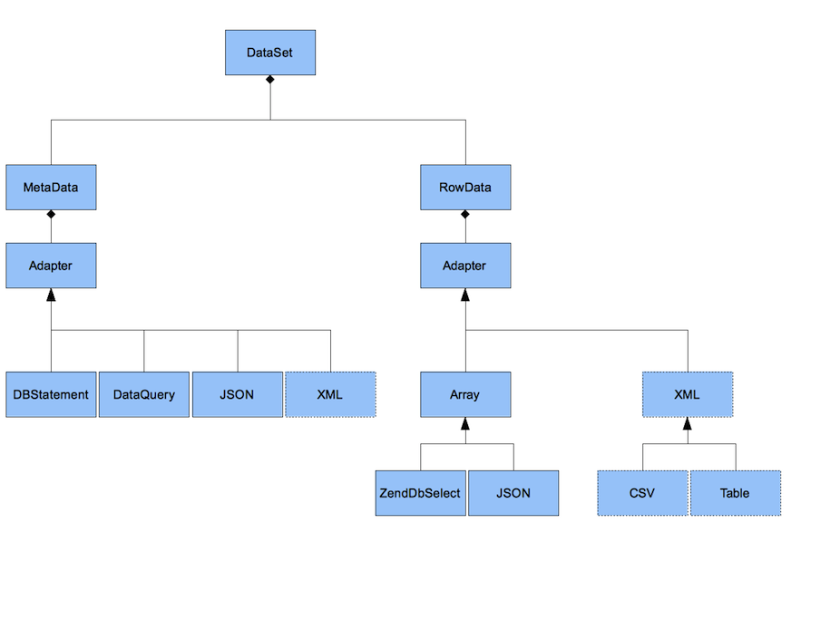
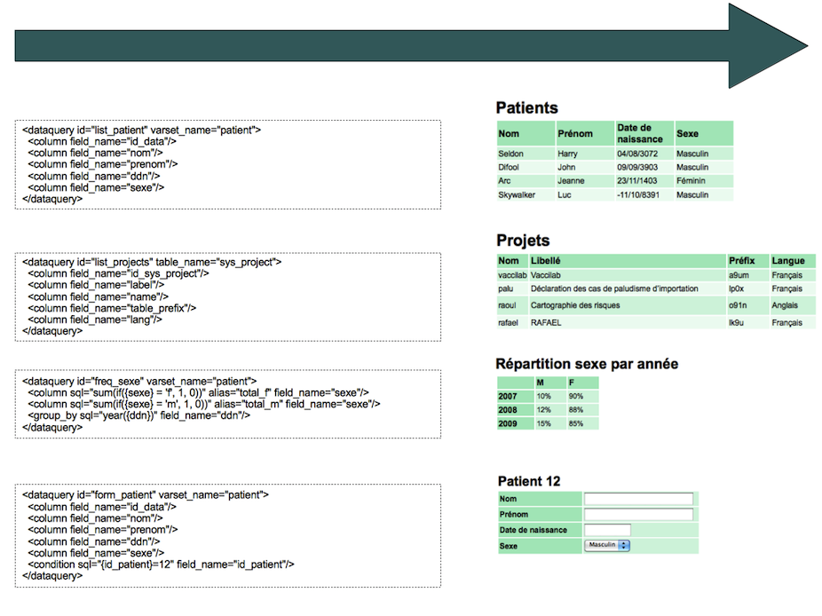
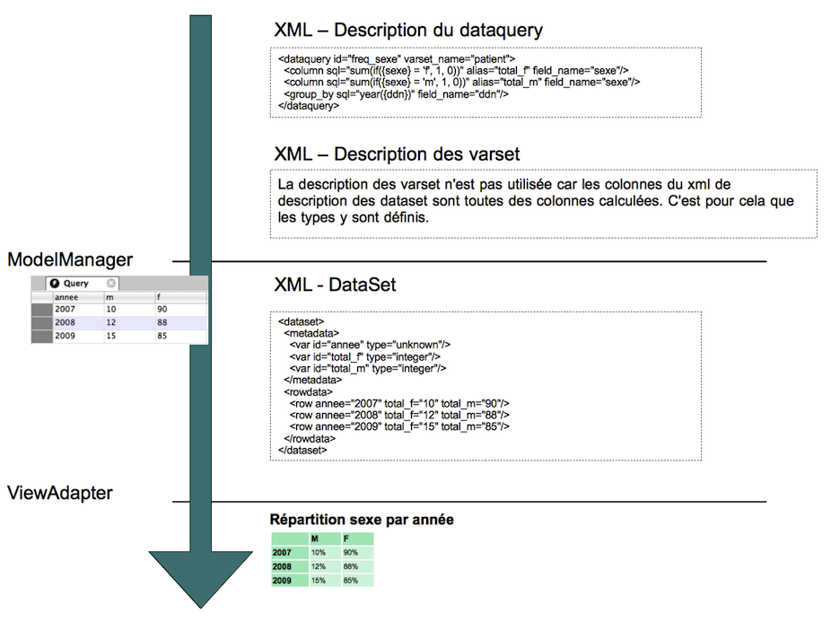
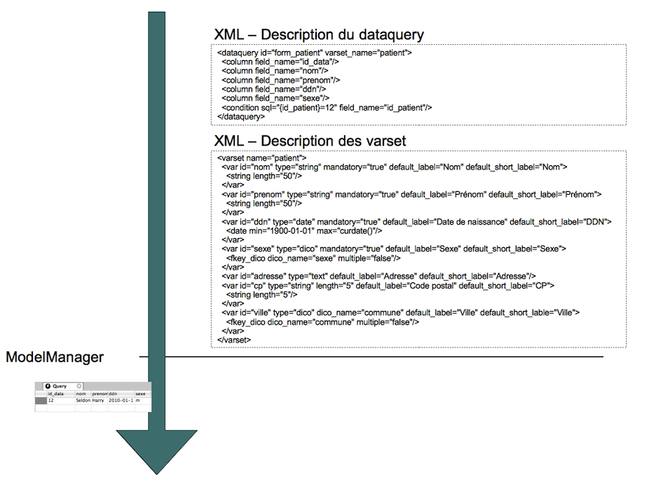
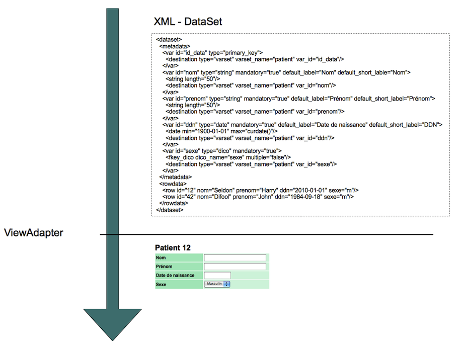
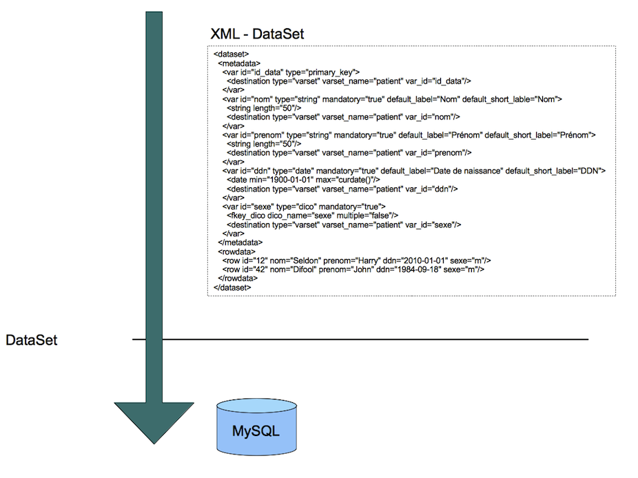
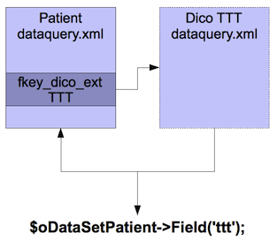

Model Manager¶
Introduction¶
Le model manager sert à interagir avec la base de données. C’est par exemple le model manager qui génère les dataset à partir de leur description (dataquery).
Gestion des dataset¶
Introduction¶
A partir d’une description de dataset (dataquery), le ModelManager produit un DataSet. Le ModelManager peut aussi prendre en paramètre un dataset pour sauvegarder des données en base (par exemple le contenu d’un formulaire).
Diagramme de class d’un dataset¶
Différents résultats à partir d’un DataQuery¶
Affichage du résultat d’une analyse¶
Affichage d’un formulaire¶
 Enregistrement d’un dataset¶
Cinétique¶
La class MetaData vérifie la cohérence de la structure du dataset par rapport aux données existantes dans le projet (ex: comparaison avec le contenu des varset)
- La class RowData sauvegarde
- Gestion des droits
- Test des types
- Lancement des tests de cohérence
- Insert / Update (utilsiation du mode transactionnel pour l’enregistrement d’un dataset)
- Historisation des modifications
Génération de clés primaires coté client¶
Lorsque le dataset est envoyé par le module formulaire, il peut contenir des clés primaires générées par le javascript. Elles sont listées dans le dataset dans la partie qui se nomme clientdata. Ainsi le serveur connait les clés qui doivent être recréés par le moteur de base de données. Les nouvelles clés devront être renvoyées au client.
Indiquer au serveur les champs modifiés¶
Actuellement le dataset (en particulier le rowdata) ne contient pas d’information qui permet de dire si la donnée a changé ou non. Ainsi lors du commit du dataset on est obligé de tout sauvegarder. Nous devons mettre une information dans le rowdata pour indiquer au système quelles sont les données à sauvegarder (ou à ajouter).
Forme actuelle du RowData:
<rowdata>
<row age="28.74" id_data="6" ddn="1989-04-17" nom="Seldon" prenom="Harry" sexe="1" dcontact="2010-03-01" relation="5"/>
<row age="50.29" id_data="7" ddn="1973-08-23" nom="Vincent" prenom="David" sexe="1" dcontact="2010-03-01" relation="6"/>
</rowdata>
Proposition:
<rowdata>
<row age="28.74" id_data="6" ddn="1989-04-17" nom="Seldon" prenom="Harry" sexe="1" dcontact="2010-03-01" relation="5">
<modified field="nom"/>
<modified field="prenom"/>
</row>
<row age="50.29" id_data="7" ddn="1973-08-23" nom="Vincent" prenom="David" sexe="1" dcontact="2010-03-01" relation="6">
<modified field="relation"/>
</row>
</rowdata>
On pourrait même ajouter un log des modifications:
<rowdata>
<row age="28.74" id_data="6" ddn="1989-04-17" nom="Seldon" prenom="Harry" sexe="1" dcontact="2010-03-01" relation="5">
<modified field="nom" old="NULL" new="Seldon" date="2010-06-30 11:00:03"/>
<modified field="prenom" old="NULL" new="John" date="2010-06-30 11:00:30"/>
<modified field="prenom" old="John" new="Harry" date="2010-06-30 11:00:37"/>
</row>
<row age="50.29" id_data="7" ddn="1973-08-23" nom="Vincent" prenom="David" sexe="1" dcontact="2010-03-01" relation="6">
<modified field="relation" old="NULL" new="6" date="2010-06-30 11:01:34"/>
</row>
</row>
Gestion des variables multiples¶
Les variables multiples sont représentées sous forme de cases à cocher sur le formulaire, il s’agit de pouvoir définir plusieurs valeurs pour une même variable. Exemple: il est possible de déclarer plusieurs traitements pour un patient. Dans voozanoo3 ces variables sont stockées dans une table dédiée, dans Voozanoo4, chaque variable est reliée à une table de jointure. Le type de ces variables est fkey_dico_ext. Il existe aussi le type fkey_varset_ext qui permet de faire une jointure entre deux varsets, il reste à spécifier.
Entrées/Sorties
Référence dans le XML dataquery.
<column_simple field_name="ttt" table_name="p"/>
Définition dans le XML dataset:
<mutiple name="ttt">
<value>37</value>
<value>38</value>
<value>40</value>
</multiple>
Sortie JSON:
"rowdata":
[
{
"id_data":"2",
"ttt":[37, 38, 40],
"nom":"Arc"
}
]
Traitement dans le ModelManager
Il y a deux traitements possibles:
1- Première solution, la seconde requête
Description du fonctionnement standard du dataquery: le dataquery est transformé en requête SQL pour permettre de créer le dataset. Cette requête est lancée lorsqu’on accède à une variable via la méthode Field de l’objet DataSet. Pour les variables de type fkey_dico_ext, le fonctionnement est différent. Elles ne sont pas récupérées dans la requête SQL, mais via une seconde requête qui permet de récupérer les données du varset qui sert de jointure avec le dictionnaire. Cette requête est lancée lorsqu’on accède à la variable.
On pourrait créer un dataquery générer la seconde requête:
<dataquery id="pat_ttt" table_name="e5ib_01_dico_ttt" varset_name="pat_ttt" table_alias="pat_ttt">
<column_simple field_name="id_pat" table_name="pat_ttt" />
<column_simple field_name="id_dico" table_name="pat_ttt" />
<condition sql="{id_patient}={id_dico_pat}">
<field field_name="id_pat" table_name="pat_ttt" alias="id_dico_pat" />
<variable alias="id_patient" default="NULL" target_column="id_patient">
<entry type="dataset" name="patient" field="id_data" row="current" />
</variable>
</condition>
</dataquery>
2- Seconde solution, la sous-requête
La solution précédente ne convient dans le cadre de l’utilisation de la variable fkey_dico_ext avec d’autres variables, et/ou avec des fonctions de transformation et de comparaison. Cela est possible dans le dataquery, mais c’est un cas rare. Cependant est toujours vrai dans les tests de cohérence.
Exemple d’un dataquery test de cohérence: le variable traitement de type fkey_dico_ext provoque une erreur de cohérence si le traitement qui a pour identifiant 42 est dans la variable ttt.
<column sql="42 not in {ttt}" alias="result" type="boolean">
<field field_name="ttt" table_name="p" alias="ttt"/>
</column>
Pour supporter ce type de fonctionnement, il faut utiliser une sous-requête. Ainsi on peut récupérer toutes les données d’une variable fkey_dico_ext pour les exploiter dans la requête initiale du dataquery. Exemple de requête SQL qui pourrait être générée pour le test de cohérence ci-dessus:
select 42 not in (select value from e5ib_01_dico_ttt_data
where e5ib_01_dico_ttt_data.id_data=p.id_data) from e5ib_01_data as p where p.id_data=4224;
Switch d’un mode à l’autre
Le premier système (seconde requête) a l’avantage d’être mieux optimisé par rapport au second. Cependant il est insuffisant dès lors qu’on souhaite effectuer des traitements poussés. Dans ce cas il faut passer au seconde mode (sous-requête). Le passage d’un mode à l’autre doit se faire par l’analyse de la partie SQL de la colonne. Mode seconde requête si l’attribut SQL est égale au nom de l’alias:
<column sql="{ttt}" alias="ttt">
<field field_name="ttt" table_name="p" alias="ttt"/>
</column>
Dans le cas contraire, on passe en mode sous-requête:
<column sql="42 not in {ttt}" alias="result" type="boolean">
<field field_name="ttt" table_name="p" alias="ttt"/>
</column>
Il doit être possible d’utiliser les deux modes en même temps dans un dataquery.
Les “Paramètres altérés”¶
Note
(Disponible depuis la révision 1902 du 02/05/2013).
Cette fonctionnalité est réservée aux développeurs et est propre au noyau de Voo4.
Principe¶
Schématiquement lorsque le ModelManager détecte une ou plusieurs balises “<condition>” dans un DataQuery il les évalue en utilisant la classe
Core_Library_Resource_XML_DataQuery_Params pour récupérer la valeur réelle du paramètre à utiliser.
Cette classe intégère maintenant la notion de “Paramètre altéré” : si le paramètre demandé est détecté comme étant un de ces paramètres le “getter” approrié sera appelé afin d’injecter une logique plus complexe qu’un simple getter.
Liste des paramètres altérés reconnus¶
group_tree - Ce groupe et ses enfants¶
La détection de se paramètre occasionne l’appel au getter getParamGroupTree en charge de retourner un tableau contenant l’identifiant
du groupe sélectionné ainsi que les identifiants de tous ses fils.
Cela permet, dans des interfaces complexes, de proposer à l’utilisateur la sélection d’un groupe en tant que critère de filtrage et d’inclure dans les résultats les fiches correspondant à ce groupe et tous ses enfants.
Note
Le développeur doit anticiper ce comportement lors de l’utilisation du paramètre altéré group_tree : le retour d’un tableau d’identifiants.
Il doit donc écrire son fragment SQL en conséquence, avec un IN :
<condition sql="{gl.id_group_parent} IN ({param_id_group})" optional="true">
<field field_name="id_group_parent" alias="gl.id_group_parent" table_name="gl"/>
<variable alias="param_id_group" default="null">
<entry type="param" name="group_tree" />
<entry type="dataset" name="filter" row="current" field="group_tree" />
</variable>
</condition>
Ajout de paramètre altéré¶
Pour ajouter un paramètre altéré il faut :
- L’ajouter dans l’attribut protected
$_aAlteredParams, exemple : <?php protected $_aAlteredParams = array('group_tree', 'foo_bar');
- L’ajouter dans l’attribut protected
- Définir la méthode qui fera office de “getter” pour le paramètre altéré, exemple :
<?php public function getParamFooBar( $sOriginalParamName ) { //Logic pour retourner le paramètre demandé }
Warning
Le getter reçoit systématiquement un paramètre $sOriginalParamName qui est une String représent le nom du paramètre d’origine.
Dans le cas d’un paramètre altéré natif “foo_bar” ou “group_tree” ce paramètre vaudra respectivement “foo_bar” et “group_tree”. Cependant l’utilisateur peut utilisé un “Alias de paramètre altéré” pour lié un paramètre “azerty” au comportement du paramètre altéré “groupe_tree”.
Ce comportement sera rarement implémenté mais est permis, voir les détails ci-dessous.
Ajout d’un Alias de paramètre altéré¶
Le développeur peut spécifier un Alias de paramètre altéré pour faire pointer un paramètre qu’il nomme “dummy” vers le comportement spécifique du paramètre “group_tree”.
Pour ce faire il doit exploiter les Points d’accès (Voir Points d’accès (Hook / Events)) et en particulier celui lié au getDataset : _getdataset_beforeExecute.
Ce dernier dispose, dans son contexte, de la clé 'aParams' contenant un array de paramètres fournis en HTTP Get. Le développeur peut à loisir
transformer ce tableau de paramètre en objet Core_Library_Resource_XML_DataQuery_Params afin d’indiquer un alias via :
<?php
$oParams = new Core_Library_Resource_XML_DataQuery_Params( $oDataQuery, $aParams );
$oParams->AddAliasAlteredParameter('dummy', 'group_tree');